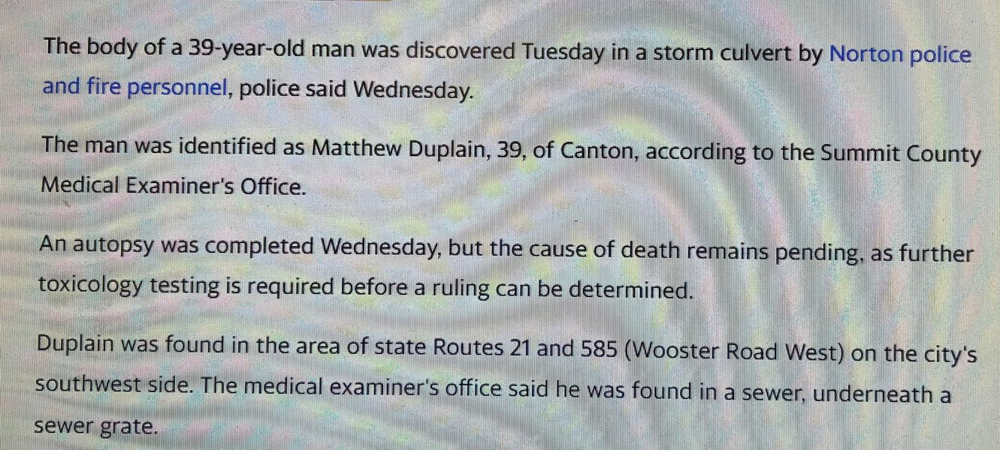

Timeline photos
This is the entire story of society today. It's a complete novel:
"Man found dead in storm culvert. Cause of death still pending."
EVERYONE WHO HAS BEEN TOUCHED BY IT KNOWS WHY.
We are isolated and ignored. We are left to freeze to death in a storm culvert. Everyone in power is desperately trying to pretend nothing is happening.
School shootings, opiate overdoses, suicides, homelessness, mentally ill people wandering the streets.
"Cause of death still pending."